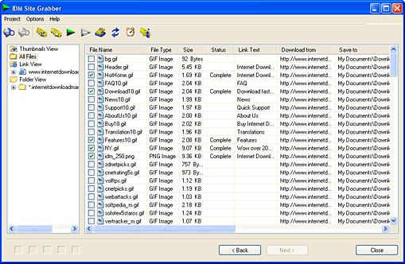

Introduction
The site grabber feature of Internet Download Manager not only lets you download required files that are specified with filters, for example all pictures from a web site, or all audio files from a web site, but it also lets you download subsets of web sites, or complete web sites for mirroring or offline browsing.
The site grabber has a set of predefined project templates, which make it easy to set the Grabber for a required type of project.
The grabber itself is an easy to use four step wizard that determines completely what files to download and where from. The grabber has a flexible set of filters both for the web pages to explorer, and for the files to download. After creating a project, the grabber starts to explore files.

Then you can check all necessary files and download them in the grabber by pressing the download button in the toolbar, or you can add the checked files to the main list of Internet Download Manager. At any time you can get back to any stage of the wizard to change settings, for example paths to save files, or filter settings, and then go to the last stage to resume exploring a site or downloading files.
It's also possible to download all explored files automatically. After closing the grabber, Internet Download Manager asks to save the project. The saved project is added to the list of saved projects which is shown under the "Grabber projects" node in the categories tree of the main IDM dialog.
When you right click on a project name, Internet Download Manager shows a popup menu where you can open a project to continue downloading, schedule the project, or delete the project.